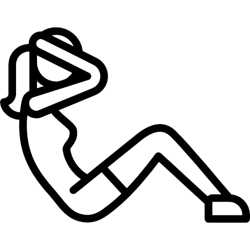
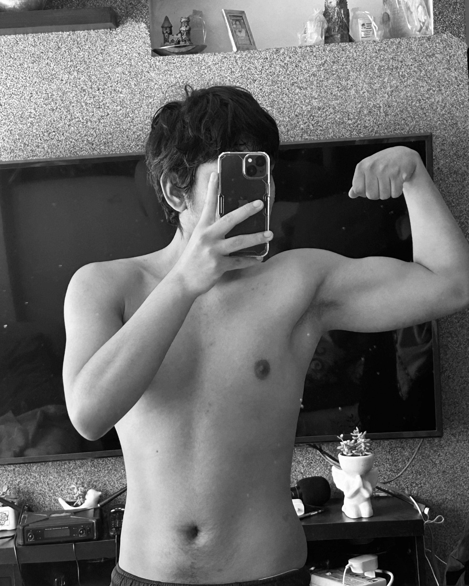

Acerca de nosotros!!!
Buscamos impulsar tu vida saludable
Nos preocupamos en la manera de poder motivar tu vida diaria, de manera saludable e interactiva con otros usuarios que ayudara a un progreso en comunidad
Solo comida sana
Monitoreo de una calorias balanceadas
Ejercicios
Recados de ejercicios semanales
Testimonio
¿Qué opinan nuestros usuarios?

De adicto a la comida basura a la consumidor consciente.
"Esta aplicación de fitness cambió mi vida. He perdido 25 kg, y siempre es lo que más quise en el mundo. Desde que obtuve mi cambio, gané respeto, confianza, autoestima y superioridad. El mundo del fitness es lo mejor que pude conocer."
- Fabricio Prado

Estaba deseando hacer un buen camino saludable.
""¡Increíble! Con esta aplicación, he logrado mis objetivos de fitness más rápido de lo que esperaba. Los resultados que he obtenido son asombrosos, y ahora me siento más saludable, en forma y llena de energía.
- Eva